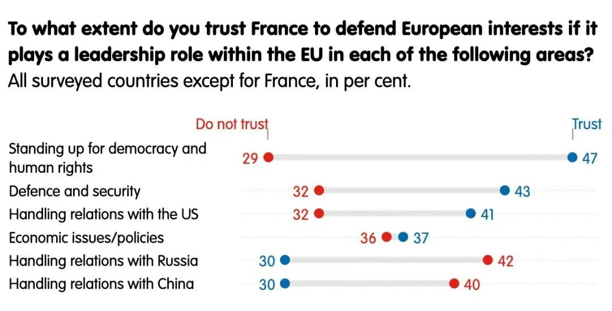

收录于合集

欧盟的法国化趋向及其影响
作者： 张健，中国现代国际关系研究院院长助理兼欧洲研究所所长、研究员、博士生导师。
来源： 《现代国际关系》2022年第2期。
导读
昨日，法国大选尘埃落定，现任总统马克龙以58.2%得票率力压极右翼候选人勒庞，成为20年来首位连任的法国总统。 2022年法国大选在很多方面显得像是2017年大选的“重复”，但有一个关键因素发生了变动：过去五年在马克龙的带领下，欧盟的“法国化”趋势已经越来越明显。根据欧洲外交委员会今年三月发布的一项调查，欧洲人比以往更欢迎法国的领导，这不可不归功于马克龙本人的努力 。大选前夕，德国、葡萄牙、西班牙等多国领导人呼吁法国选民支持马克龙，这间接显示欧盟国家对法国下一任总统对欧政策不确定性的担忧。
本文指出，近年来欧盟内一个突出的变化是法国（而非德国）关于欧盟发展的政策主张正在更多变为欧盟的实际政策。通过将欧洲塑造为一个“大号的法国”，法国获得了扩大全球影响力的“阿基米德杠杆”。 法国塑造欧洲的努力之所以在近年来获得巨大成功，有赖于三重条件：第一，全球地缘政治的变化与美欧关系出现离心倾向，可谓天时。第二，英国脱欧引发欧盟力量格局向有利于法国的方向演进，可谓地利。第三，马克龙的亲欧立场为法国赢得其他成员国特别是欧盟机构的支持，可谓人和。
在法国的影响下，欧盟在财政政策上更强调再分配性质，在经济理念上更倾向于保护主义和打造“欧洲冠军”，在地缘政治上更突出“欧洲主权”及“战略自主”的建构。 马克龙的连任将进一步加强这种趋势。欧盟的法国化将推动中欧关系的竞争性和战略性双双增强。 欧亚系统科学研究会特编发本文，供读者思考。文章原刊于《现代国际关系》，限于篇幅，有所删节。仅代表作者本人观点。
欧盟的法国化趋向及其影响
▲ 周日，马克龙在法国巴黎埃菲尔铁塔前与支持者一起庆祝胜选。图源：AP
欧盟是一个主权国家的联合体，性质与权力介于主权国家与一般意义上的国际组织之间，并处于持续的演进之中。
近年来，欧盟内一个突出的变化是法国（而非德国）关于欧盟发展的政策主张正在更多变为欧盟的实际政策
。换言之，欧盟正在经历某种程度的法国化。那么，这种法国化是长期趋势还是短期现象，背后的推动因素是什么，对欧盟发展、全球地缘政治格局、中欧关系等又将产生何种影响，本文试着就此作初步探析。
01
欧盟正在变得更加“法国化”
近年来，欧盟内外政策均发生了一些较为明显的变化，法国的印记更为清晰，即出现法国化趋向。
首先，在欧洲一体化发展方面，欧盟进一步迈向财政联盟和转移支付联盟。
通过欧元区的货币政策以及欧盟层面的财政政策，北方富裕国家或主动或被动，以隐形及显形等多种形式向南部及东部相对落后国家转移更多资源，
欧盟层面的再分配性质更为凸显，这体现了法国的团结要求
。当然，欧盟内部的转移支付一直存在，作为利益交换，富裕的工业国家通过欧盟单一市场获得更大的商品销售市场和投资场所，竞争力较差的国家则通过欧盟共同预算获得补贴。但这一转移支付是有限的，因为成员国之间存在分歧和矛盾。北方富裕国家更注重财政纪律和结构性改革以提升竞争力，南方国家则希望有更多的风险共担。这一分歧在主权债务危机期间异常尖锐，法国从自身利益出发，主张团结，呼吁建立欧元区共同预算，发行欧元区债券，建立银行业联盟等，但德国却心怀戒备，担心欧元区成为以德国纳税人为代价的“转移支付联盟”。
所谓团结，很大程度上意味着欧洲一体化的深化发展
。欧盟要有力量，首先就要团结，要内部整合，而要做到内部整合，就必须有一系列的机制性安排，如主权债务危机期间设立的“欧洲稳定机制”。当然，团结表现在诸多方面，比如难民分摊，在一个成员国与第三方发生冲突时支持这一成员国等。但由于主权债务危机的严重性及其造成的长期后果，加上世纪疫情的冲击，“团结”一词更多用于货币经济财政领域。
从这方面来看，欧盟近年来、特别是新冠疫情暴发以来，取得了明显进展。在货币政策领域，欧洲央行不断逼近其权力边界，更具有主权国家中央银行的特征。
早在主权债务危机时期，面临欧元区解体风险，欧洲央行已经开始扮演最后贷款人的角色，即与美联储、日本央行一样，实施量化宽松政策，大规模购买成员国国债。这一政策背后是法国、意大利、西班牙等国的大力推动，并得到德国的默认。2012年9月6日，欧洲央行行长德拉吉宣布推出名为“直接货币交易”的购债计划，宣布欧洲央行将在二级市场上无限量购买欧元区重债国三年期以内的国债。这一措施是史无前例的，在欧盟内部引起较大争议，德国多名经济学家还将欧洲央行诉至欧洲法院，指其行为超出欧盟法律授权，但欧洲法院最终裁定欧洲央行没有违反欧盟法律。禁忌一旦打破，便开始成为惯例，所谓量化宽松也成为了欧洲央行的常规政策。
其次，在经济发展理念方面，欧盟委员会对经济的干预力度加大，法国“保护的欧洲”理念正在落实，其所谓“经济爱国主义”正上升为欧盟层面的工业政策和保护主义。
法国的经济爱国主义根深蒂固。2005年，美国百事公司准备收购法国达能公司（这一公司以其酸乳酪出名），遭到法国政府反对。“战略性的酸乳酪”一度成为法国过度保护主义的代名词。法国时任总理德维尔潘曾毫不掩饰地宣称法国需要“一种真正的经济爱国主义”，强调“当世界在变化的时候，我们要集聚法国的力量来捍卫法国式的东西”。当时的法国受到了欧盟委员会的批评，被认为是妨碍自由竞争。但从现在来看，欧盟的政策主张正在向法国加速靠拢。“主要由于法国的原因，欧盟在采取防卫性的经济和贸易政策方面更为咄咄逼人”。
法国通过打造“欧洲冠军”、加大投资保护力度等方式保护欧盟经济利益。
欧盟此前一直强调公平自由竞争和消费者保护，有最为完善的竞争法规，欧盟委员会在这一领域享有广泛的权力，忠实充当了欧盟竞争法规的守护者。2017年9月，德国西门子和法国阿尔斯通宣布就合并铁路业务达成协议，准备打造轨道交通行业新的“欧洲冠军”。这一计划得到法德两国大力支持。但在2019年2月6日，欧盟委员会否决了这一计划，理由是这一合并会构成垄断、不利于市场竞争。这一否决在两国及欧盟内部引发广泛争论。
欧盟反垄断法是应该强调消费者利益还是有助于形成全世界范围内的“欧洲冠军”，欧盟内各方看法不一。
从目前态势看，欧盟已经明显转变工作思路，2019年底产生的新一届委员会更理解法国“欧洲冠军”的愿望。
欧盟委员会在酝酿修改欧盟反垄断法，在给欧盟内企业的兼并重组留下更大空间的同时，制定新的工业发展战略，加大政府层面的干预力度，以更为积极的产业政策扶持某些战略性行业，比如电池和半导体、云计算等领域。在投资领域，在法国等国的一再敦促下，从2016年开始，欧盟开始酝酿欧盟层面的投资保护机制。2019年4月，欧盟投资保护新规正式生效，用以保护欧盟内所谓战略性产业和资产。此外，法国还试图抵制外国主要是美国高科技公司在欧盟市场上的垄断地位。2016年4月制定、2018年5月正式生效的《通用数据保护条例》，旨在加大对谷歌、脸书等高科技企业的监管力度。法国于2019年7月引入数字税，准备对大型数字企业征收销售税，在法国之后，意大利等多国也开始跟进，欧盟层面也正在讨论制定数字税计划，并积极推进《数字市场法案》和《数字服务法案》的立法进程，打造应对外国高科技大型企业垄断地位的“工具箱”。
法国还以“对等”、气候变化为名行保护之实。
在法国的推动下，欧盟于2012年和2016年两次提出“国际采购工具”立法建议，但因为一些成员国，特别是北欧国家担心该法案有保护主义嫌疑，并且可能因为排除价格优惠的产品损害本国纳税人利益，并不热心，但现在得到了德国等更多国家的支持，正在加紧制定，意图将中国等诸多国家排除在欧盟的公共采购市场之外。在气候变化领域，早在萨科齐总统时期，法国就不断鼓吹对进入欧盟的境外产品征收碳关税，以应对所谓不公平竞争。2019年，在法国的游说之下，德国也改变之前对可能引发贸易战的担忧，同意设立某种形式的碳关税。目前，欧盟正在酝酿出台碳边境调节机制，实际上就是碳关税，这也是法国2022年上半年担任欧盟轮值主席国期间的一项重要任务。
再次，法国的理念“欧洲主权”及“战略自主”正成为欧盟的地缘政治诉求。
2017年9月26日，法国总统马克龙在索邦大学就欧洲政策发表的演讲中提出“欧洲主权”这一理念，其中关键性领域是防务、边界保护、外交政策及生态、数字和经济等。马克龙还提到了食品主权、技术主权、卫生主权及太空政策等。马克龙所提的欧洲主权理念引发了欧盟内部争议，一些成员国有疑虑，但这可能正是法国想要达到的效果，即激发欧盟内部关于独立性的讨论。
法国希望欧盟不仅要有经济思维，还要有更多的地缘政治思维，“主权构建”这样大胆和刺激性的提法更容易激发讨论。
主权是“国家对内的最高权和对外的独立权。在国际法上是国家的根本属性，是国家基本权利的基础”。从这个意义上讲，欧盟并不是一个独立的主权行为体。虽然欧盟也有一些主权属性，比如，欧盟法律优先于成员国法律；欧盟有所谓专属权力，在关税、竞争政策、贸易政策、货币政策（限于欧元区）、渔业政策等领域，欧盟机构的权力凌驾于成员国之上；欧盟有较大规模的预算，相当于欧盟GDP的1%，有自己的收入来源，如关税。但所谓欧洲主权显然也是有限的、相对的、不完整的，并无真正意义上的欧洲主权。比如欧盟在预算、税收、财政、外交和军事等领域就很难有真正的主权。
马克龙在提出欧洲主权的说法后，一些成员国难以接受，北欧富裕国家不愿财政一体化，中东欧国家虽然有赖于欧盟在资金上的团结，但任何听起来好像要脱离美国的说法都让其不适。
尽管如此，过去几年来，“欧洲主权”逐渐成为欧盟政治中的主流词汇。
欧盟委员会前主席容克就对此极为热心，其2018年的盟情咨文标题就是《欧洲的主权时刻》。现任欧盟委员会主席冯德莱恩虽然不常用欧洲主权的说法，但却频繁提及“欧洲数字主权”。德国也开始更多接受欧洲主权这一用语，德国前外长马斯就曾多次使用，提出要建立一个“主权的和强大的欧洲”。德国2021年12月成立的新政府执政目标之一就是“增加欧洲的战略主权”。“欧洲主权”这一理念提出四年多来，其内在涵义已开始成为欧盟政治思维主流，追求欧洲主权意味着欧盟必须克服其弱点，减少对外依赖，增强其力量；意味着欧盟不再甘于经济力量的身份，开始追求一些主权上的属性，如防务、安全、战略技术等等；意味着像法国这样的大国更多从欧洲层面来追求自身的独立自主；也意味着对所谓“主权主义者”的反证，即通过构建欧洲主权，反而能得到更大的自主权。
“战略自主”与“欧洲主权”内涵相近，但因为政治性稍弱、技术性更强在欧盟内得到了更广泛的使用。“战略自主”是达成“欧洲主权”的路径和手段，即如果欧洲要享有主权，就必须在战略上能够自主；只有战略上实现了自主，才能有真正的主权。
在现实政治中，“战略自主”和“欧洲主权”这两个词是经常作为同义词互换使用的。“欧洲主权”这一提法是法国的原创，“战略自主”同样源自法国。
戴高乐主义的核心要义就是自主、独立，也就是战略上的自主权，特别是独立的核威慑战略。2013年，法国国防与国家安全白皮书就提到了“法国决策与行动的自主性”。2017年法国战略评估再次强调，法国必须保有自主决策及单独行动以捍卫自身利益的能力。
“欧洲主权”某种程度上仍只是一个口号，一个联邦化的欧盟在可预见的将来仍难以想象；“战略自主”得到更多的接受和认可，但其最终实现也可能遥遥无期。
尽管如此，这两个概念成为欧盟内部焦点话题，已经在很大程度表明，欧盟的战略思维开始有更为明显的法国印记。
值得指出的是，2019年底新一届欧盟委员会上任时，冯德莱恩宣称要构建一个“地缘政治的委员会”；欧盟外交与安全政策高级代表博雷利声称欧盟要“学会使用权力的语言”，都很明显受到了法国的影响。
02
法国塑造欧洲的努力为何成功？
法国作为创始成员国，一直将欧盟视为自身力量的倍增器。
戴高乐曾明确提出欧洲是法国的“阿基米德杠杆”，他说，“欧洲之于法国，就是要让法国再次获得在滑铁卢之后失去的地位：世界第一”。
法兰西第五共和国的历任总统均声称自己是戴高乐派，也就是说，法国对于欧洲建设有独特的情怀，致力于以法国为模板塑造欧洲。所以，戴高乐极力反对英国加入当时的欧共体，因为戴高乐认为英国加入后将成为美国的特洛伊木马，欧洲也将因此不可能成为法国的欧洲。法国希望将欧洲建设成为一个“团结的欧洲”“保护的欧洲”“政治的欧洲”“防务的欧洲”，让欧洲成为一支真正的全球性力量，而这与英国的“松散的欧洲”“贸易的欧洲”及“跨大西洋的欧洲”理念格格不入。
法国给欧盟打下了一些法国的印记，如20世纪60年代形成的“共同农业政策”，体现了法国“团结”（意味着德国等国需要补贴法国农业）、“保护”（从欧盟层面保护法国农业）的欧洲建设理念；1974年法国倡导成立欧洲理事会，开始协调欧共体层面的政治合作；90年代欧盟的成立及欧元的创建等，都反映了法国将欧洲建成为世界一极的主张。
但总体而言，几十年来法国塑造欧洲的努力不太成功，原因有二。
一是两德统一后，法国在欧洲地位和影响力相对下降
，而德国的大西洋主义与欧洲主义同样深厚，在贸易、经济、对美关系等领域，德国经常与英国而非法国有更多的共识，法国无法改变德国和英国经济上的自主主义和外交上的跨大西洋主义；
二是东扩，法国无力阻止英、德两国联手推动欧盟东扩
，一如法国所料，11个中东欧国家的加入让欧盟更难驾驭，也让法国的欧洲理想更加遥不可及，“欧洲杠杆”因此远未发挥作用。法国总统马克龙2019年在接受英国《经济学人》杂志采访时曾哀叹：“自从90年代以来，欧洲忘记了自己是一个共同体，越来越将自己看作是一个市场，将扩大作为最终目标。
这是一个根本性错误，因为这降低了欧洲项目的政治视野。市场显然不是共同体，共同体更强，它有团结和趋于一致的观念，有政治思想，但这些我们都丢失了”。
从马克龙的理想看，他有理由对欧洲现状感到失望，因为欧洲离成为世界真正一极的力量还太远，但他的哀叹也可能是想刺激欧洲加快前行。
近年来，法国塑造欧洲的努力之所以取得进展，可以说是天时、地利、人和综合作用的结果。
第一，全球地缘政治的变化可谓天时。其中最大的变化是美国。
长期以来，欧洲一直认为美国是可以依靠的盟友、志同道合的伙伴。但美国国内政治的变化却一再打击进而逐渐动摇欧洲这一信念。特朗普政府推进“美国优先”单边主义霸凌政策，视欧盟为经济和贸易上的“敌人”，对欧洲人的周边安全问题漠不关心，攻击欧洲人赖以自傲的欧洲一体化和欧洲建设等。特朗普震惊了欧洲，将欧洲从长远依赖美国的迷梦中唤醒，即便是最为亲美的欧洲国家，对跨大西洋联盟的前景也出现了疑虑。拜登放弃了“美国优先”的口号，对欧洲人也更多采取怀柔政策，甚至放低姿态，拉拢欧洲盟友，修复受损的跨大西洋联盟。
但一年来，欧洲人痛苦地发现，美国人变的只是形式，单边主义霸凌政策的实质并未改变。
从阿富汗撤军即是一例，拜登政府完全没有考虑欧洲国家的感受，执意完成撤军。美国背着法国及欧洲搞秘密外交，伙同英国一起与澳大利亚签署美英澳三边安全协议，不惜以此严重损害欧洲盟友利益，此事再次表明美国对所谓欧洲盟友的漠视和无情。
美国对欧政策变化与全球地缘格局变化相关。美国认为中国是其最大对手，自奥巴马政府开始，美国战略重点就开始转向东方，从“亚太再平衡”到所谓“印太战略”，目的都是遏制中国。欧洲自然也必须服务于这一战略，特朗普政府强迫欧洲国家选边站队，拜登政府表面上说不要求欧洲盟友选边站，实际上执行的是与特朗普一样的政策，甚至力度更大，如策动欧盟内部一些小国在对华政策上走极端。很难想象，没有美国的怂恿，立陶宛会允许台湾地区设立所谓“驻立陶宛台湾代表处”。美国的图谋是以此类问题绑架中欧关系，中欧陷入敌对状态，得利的是美国，受害的是欧洲。美国从维护霸权角度看中国，但欧盟仍主要从经济和价值观角度看中国。
尽管欧盟官方将中国视为制度上的对手，但绝大多数欧洲人并不认为中国对其生活方式构成威胁，也倾向于在任何中美冲突中都保持中立。美国一再逼迫欧洲选边站，无视欧洲自身利益，自然会加大欧洲的焦虑心理。
2017年法国首次提出欧洲主权倡议时，欧盟内应者寥寥，北欧和中东欧的亲美国家尤其不以为然，但现在则得到了更多的理解和认真对待。值得指出的是，即便在安全上极为依赖美国，极不愿意疏远美国的一些中东欧国家，也加入了旨在加强欧盟防务自主的“永久结构性合作”。出于顾及美国感受等原因，这些国家不会像法国那样大声，但可能都无言地承认“马克龙是对的”。简言之，欧洲人似乎认识到，未来要更多地靠自己。

▲
欧洲外交关系委员会今年3月份进行的一份民调显示，欧盟成员国相信法国会保护欧盟在与美国的关系、民主和国防方面的利益。来源：ECFR
第二，英国脱欧引发欧盟力量格局向有利于法国的方向演进，可谓地利。
英国是欧洲三大国之一，对欧政策主张鲜明，是典型的“国家主权主义者”和“自由主义者”，即反对欧盟深化一体化，将欧盟视为经济项目而非政治工程，也是强烈的大西洋主义者，反对任何有可能削弱北约的欧盟防务领域一体化，在重大安全与防务问题上更多与美国而不是欧盟站在一起。因此，英国脱欧对欧盟力量格局产生了立竿见影的影响。
一方面，英、法、德曾是欧盟的稳定三角，无论在一体化、经济还是欧盟的独立自主外交方面，英、法都是对立的两端，德国处于中间位置，起到调和作用。
三角变双边后，法国对德国影响力增大，德国很难再以英国反对为由而后缩，出于对欧盟未来发展的担忧和热忱，德国尽管怀疑法国宏大理想后面的私心，但是仍感到有义务支持法国的欧洲主张，比如构建欧洲主权、推进战略自主。
另一方面，欧盟内南、北国家在资源禀赋、对欧情感、经济和外交政策重点等方面存在较大差异
，比如，南欧国家都是欧元区成员国，北欧国家除芬兰外都不是，中东欧的核心三国波兰、捷克、匈牙利也都不是，
南欧国家的天然领袖是法国，英国则在诸多方面与北欧、中东欧国家志同道合
。英国脱欧让北欧、中东欧国家在很大程度上失去领导者，也更容易遭受来自法国等国的压力；而南欧版块在欧盟内影响力相对上升，意大利希望与德国、法国一起形成欧盟新的三驾马车。
第三，马克龙总统的亲欧立场是法国赢得其他成员国特别是欧盟机构支持的重要因素，可谓人和。
戴高乐以来，法兰西第五共和国历任总统虽然都是欧洲联合的积极支持者，但大体都主张建设一个“民族国家的欧盟”。也就是说，成员国特别是大国在欧洲事务上应该处于中心位置。戴高乐总统反对欧洲建设的联邦主义倾向。1965年，为反对欧洲共同体从一致表决过渡到多数表决（法国失去一票否决权），戴高乐领导的法国政府制造了长达6个月“空椅子危机”，拒绝派法国代表出席理事会会议。但随着法国国力的持续相对下降，以及全球地缘政治形势的变化，法国开始逐渐调整对欧策略，将欧洲主权视为法国主权的延伸而非限制，接受甚至推动欧盟超国家机构特别是欧盟委员会拥有更多的资源和权力。2017年，马克龙打着亲欧的旗号当选法国总统。
上任五年来，马克龙对欧洲建设表现出前所未有的热情，虽然没有自称联邦主义者，但实际上支持欧盟机构集权，也就是支持欧盟的联邦化发展。
马克龙不再主张“法国冠军”，转而支持打造“欧洲冠军”，如支持法国阿尔斯通与德国西门子铁路部门的合并，支持欧洲电池联盟和半导体联盟建设等。马克龙支持欧洲团结一致，2019年访问中国时，他的代表团里有一名欧盟贸易委员、一名德国部长，还有众多德国企业老板，在发表贸易政策演讲时，言必称欧洲，刻意不提法国。尽管马克龙本质上仍从法国利益出发，但由于是以欧洲的名义，其他成员国即使不认可也难以反对。
2019年欧盟领导人换届时，马克龙提名和支持的政治领导人都获得了重要职位，如德国人冯德莱恩会说法语，在很多问题上与法国立场相近，由马克龙提名担任欧盟委员会主席,她上任后被指责“太亲巴黎”。欧洲理事会主席米歇尔是马克龙的亲密盟友。欧盟外交与安全政策高级代表博雷利与马克龙政见相似。法国人拉加德担任欧洲央行行长等。这些人都是所谓的欧洲主义者。欧盟机构特别是欧盟委员会有内生的集权倾向，希望获得更多的权力，无论是“团结的欧洲”“保护的欧洲”，还是“欧洲主权”“战略自主”建设，都需要成员国向欧盟层面让渡更多的权力，以更好地整合力量，赢得全球地缘政治经济竞争。
因此，马克龙的欧洲建设主张可以说与欧盟机构诉求高度契合。欧盟机构乐于配合法国的地缘政治雄心，反过来这也让法国的欧洲主张有了更多的合法性，更容易得到其他成员国认可和支持。
03
欧盟“法国化”的不确定性与影响
欧盟的法国化是一个进程、一种博弈，是曲线而非直线，其过程中的突破或挫折、最终结果的成功或失败取决于诸多因素，包括法国在欧盟内实力地位的消长、美国国内政治的影响（如特朗普派是否会卷土重来）、国际形势的变化等等。2022年4月，法国将迎来总统选举，马克龙连任希望较大，但仍面临一些挑战。
普遍认为，马克龙将进入总统选举第二轮，如果是极右的勒庞或泽穆尔进入第二轮，那马克龙将确定赢得选举；如果是共和党的佩克雷斯进入第二轮，结果有一定的不确定性。佩克雷斯立场温和，对欧政策与马克龙无原则性差异。因此，即使马克龙下台，下届法国政府对欧政策可能作出一些调整，但不会发生根本性变化。
值得指出的是，马克龙虽然显得更为亲欧，并不反对甚至支持欧洲的联邦化发展，其欧洲立场并没有背离自戴高乐以来历届法国政府的欧洲政策传统，即塑造欧洲，将其变为一个大号的法国，即使欧盟机构获得更多权力，只要其总体仍有利于扩大法国全球影响力，就能得到法国支持。
▲
马克龙和勒庞在欧洲和外交政策之间的分歧尤为明显，因此两人的对决为未来法国欧盟政策的走向增加了不少悬念。图源：AP
2022年1月1日至6月30日，法国将担任为期半年的欧盟轮值主席国。在其工作计划里，法国设立了三大议程，其中第一大议程就是建设一个“更主权的欧洲”，提出“加强欧盟的战略自主将是法国作为轮值主席的中心工作”。
2022年1月19日，在乌克兰危机加剧的背景下，法国总统马克龙在欧洲议会发表演讲，阐述法国在轮值期间的优先议程，再次提出要“创建一个独立的欧洲，有能力决定自己的未来而不是依赖其他外部大国的决定”；“欧洲需要开辟与俄罗斯对话的另一条道路”（不同于美俄对话），并宣称欧洲需要“重新武装”。法国的轮值计划既着眼当下，包括应对疫情，更注重长远，因为战略自主建设决非一朝一夕所能完成，而是一个持续的过程。
欧盟的法国化结果虽然并不确定，但这一过程本身就极为重要，将给欧洲一体化发展、欧盟与世界的关系以及中欧关系等带来重要影响。
首先，未来欧盟将更加集权，欧盟机构与成员国的主权之争也将更为突出。
欧盟的权力来源于成员国的主权让渡，《罗马条约》及随后对其修订的多个条约是欧盟的根本大法，也是欧盟行使权力的依据和保证。2009年通过的《里斯本条约》是欧盟迄今修改基础条约的最后一次尝试。在很难通过修订条约来扩大权力的情况下，通过立法拓展权力，或者将条约的灰色地带明晰化，成为欧盟扩权的主要手段。
法国的欧洲主张，无论是团结、保护还是战略自主，都意味着欧盟要加大统筹和监管力度，也意味着欧盟更大的权力。
欧盟机构权力的增大即意味着对成员国控制和干预的增强，由于欧盟层面并无真正的民主，这自然会遭致欧盟内所谓“主权主义者”的反对。2021年10月7日，波兰宪法法院判决认为，欧盟条约中部分条款有违波兰宪法。这一判决对欧盟法优先于成员国法这一法律惯例构成严重挑战。如何处理波兰问题，避免其引发多米诺骨牌效应，是当前欧盟面临的一大挑战。如果一个国家不遵守欧盟法律且不承认后果，的确可能引发其他成员国的效仿冲动。欧盟成员国对欧盟试图突破条约边际、搞“静悄悄一体化”的做法感到不满和担忧。
未来所谓“欧洲主权”与“国家主权”的博弈还可能更趋激烈。即使在法国也是如此，比如极右的总统候选人泽穆尔就声称，将恢复法国法律对欧盟法律的优先地位；另一个极右翼总统候选人勒庞主张建设一个“民族国家的欧盟”，宣称“不存在欧洲主权，因为没有所谓的欧洲人民”，反对欧盟“将其法律强加给欧盟成员国”。
博弈的结果可能决定欧盟的最终走向，欧盟有可能进一步联邦化，变得更像一个拥有主权的政治实体。但是也蕴含极大风险，如果矛盾累积，管控不力，一如英国脱欧一样，未来可能会有更多的国家脱离欧盟，而作为欧盟核心的欧元区也仍有崩溃解体的可能。
其次，欧盟与世界的关系也将发生变化。
欧盟在世界的形象主要是一个“经济大国”“规范大国”“贸易大国”“货币大国”，以及“环境大国”“发展援助大国”“宇航大国”等，但还远远算不上是一个“外交大国”，更不用说是“军事大国”了。
随着欧盟法国化的发展，欧盟虽然在短期内仍很难成为一支真正意义上的外交和军事力量，但其政治性将明显增强，与外部世界的互动将更为复杂。
一是加强世界的多极化发展趋势。
欧盟在经济、金融、科技等领域是能与美匹敌的力量，一个有独立追求、更注重捍卫自身利益的欧盟也肯定不愿完全充当美国的附庸，这有助于形成世界格局中独立的欧洲一极。
二是加强欧美关系的长期疏离趋势。
拜登政府上台以来，欧美关系在较大程度上得到改善，原因主要是美国政府加大了对欧洲的拉拢力度。但欧美关系中的结构性问题仍在，包括经济上的竞争性、地缘政治重点的差异性、控制与反控制的斗争等。欧盟的法国化趋向部分是由于这一原因，反过来又将持续加大欧美差异性，二者互为因果，相互强化。
三是加强欧盟与英国的关系竞争性。
英国脱欧后，面向海洋，寻求与英语国家抱团，特别是寻求加强与美国关系，甘当美国附庸；而没有英国的欧盟开始更多寻求战略自主，二者战略方向开始出现根本性差异。法国在英国脱欧谈判期间持强硬立场，英国脱欧后，法国在爱尔兰议定书的遵守、渔业以及非法移民等问题上，也持强硬立场，两国关系陷入历史性低迷。鉴于法国较强的脱美趋向及英国更强的贴美趋向，双方彼此猜疑将有增无减。鉴于法国在欧盟内重要地位，欧英关系很难改善。
四是损害与其贸易伙伴关系。
2019年，欧盟与南方共同市场签署了自由贸易协定，但法国等国由于担心巴西等国农产品大量进入欧盟市场冲击自身农业，迄今迟迟不予批准，引发双方特别是法国与巴西之间的外交争端。欧盟准备推进的碳边境调节税，被世界上多数国家视为贸易保护主义行为，很可能遭到他国报复，引发贸易争端。另外，欧盟正在加紧制定的所谓“反胁迫法”，一旦推行，很可能成为欧盟的又一项保护主义工具，从而也将不可避免引发贸易争端。即便是欧盟眼中的所谓志同道合者日本等国也对此提出了担忧，认为其存在较大风险。
再次， 中欧关系中的战略性与竞争性均将增强。
1964年中法建交无疑是一个具有战略性意义的事件，因为其打破了东西方截然的分野与对立。欧盟距真正的主权独立体尚有很长的路要走，也很难完全摆脱对美国的依附状态。
但一个趋于法国化的欧盟也不会完全成为美国的附庸，有自身利益追求和价值取向。这也意味着欧盟会有自己相对独立的对华政策，合作始终是欧盟对华政策的重要内容之一。
这与美国完全从遏制角度思考与制定对华政策有本质的不同。事实上，在遏制美国的霸权主义和单边主义、反对极化政治和阵营对抗等方面，中欧有共同的利益。中欧均为有全球性影响力的重要力量，双方合作及进一步深化合作的可能性对美国霸权主义具有重要的抑制作用。正是因为中欧联手维护世界和平与稳定的可能性始终存在，美国才不敢肆意妄为，这也是拜登政府极力拉拢欧洲的原因所在。欧洲自主性越强，中欧关系的战略性也会越强。
与此同时，欧盟更强调在全球范围内拓展其权力、影响力和所谓欧洲价值观，“大国”意识更强，竞争性一面更加突出。欧盟打造“欧洲冠军”、推广欧洲标准和规范，均是着眼未来的大国竞争。中欧经贸关系将面临更多障碍，比如欧盟的贸易和投资保护主义以及经贸政策的政治化、泛安全化等，都会让中欧经贸关系复杂化。当然，欧盟眼中的竞争对手不仅仅是中国，还包括美国。欧盟所谓自主、独立，很大程度上意味着从美国获得自主和独立。但由于中欧制度的不同，欧盟眼中的中欧竞争还多了一项内容，即所谓的制度竞争。欧盟对中国的三重定位，即合作和谈判伙伴、经济上的竞争者和制度上的对手，后两重都是旨在竞争。
2021年12月1日，欧盟高调公布其“全球门户”战略，拟在2027年前投入近3000亿欧元，在发展中国家建设基础设施。“全球门户”战略考虑之一就是与中国“一带一路”竞争。
由于欧盟内部问题繁多、整合不力，成员国经常在外交问题上自行其是，在全球地缘政治、经济博弈中容易处于弱势地位，这使得欧盟在所谓制度竞争问题上有特别的敏感性，也加大了中欧之间在这方面的分歧和摩擦。
排版 | 苏伊文
本文章原载于《现代国际关系》2022年第2期美欧问题栏目，为欧亚系统科学研究会编辑，文章观点不代表本平台观点。